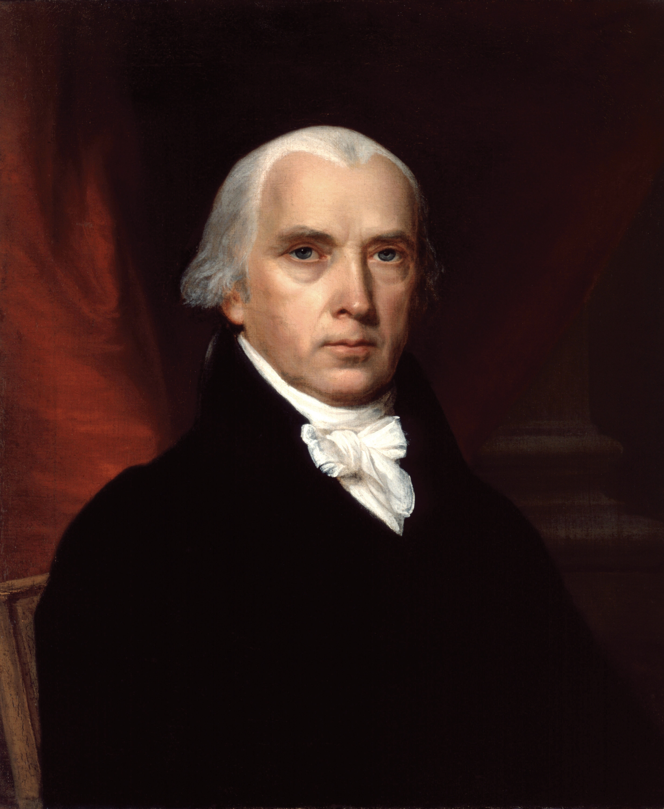
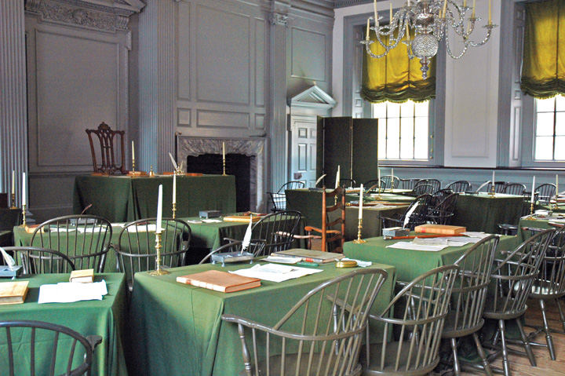
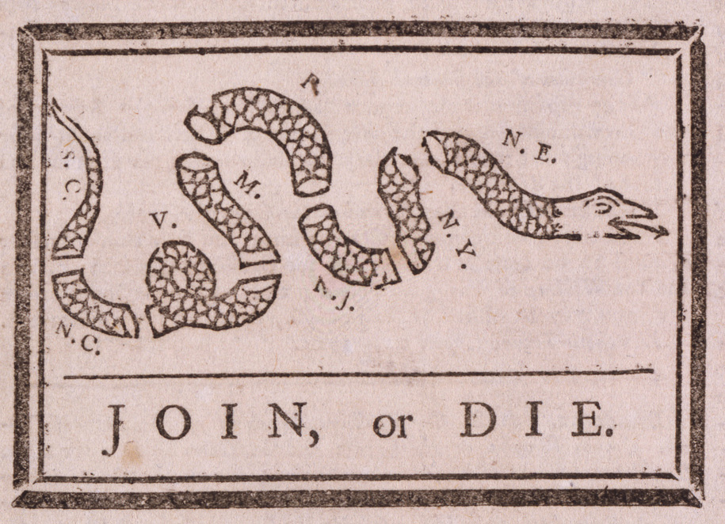

After reading this section, you should be able to answer the following questions:
The Constitution was a reaction against the limitations of the Articles of Confederation and the democratic experiments begun by the Revolution and the Declaration of Independence.
The Articles could not address serious foreign threats. In the late 1780s, Britain denied American ships access to British ports in a trade war. Spain threatened to close the Mississippi River to American vessels. Pirates in the Mediterranean captured American ships and sailors and demanded ransom. The national government had few tools to carry out its assigned task of foreign policy.A synopsis is Jack N. Rakove, Original Meanings: Politics and Ideas in the Making of the Constitution (New York: Knopf, 1996), 25–28. More generally, see Max M. Edling, A Revolution in Favor of Government: Origins of the U.S. Constitution and the Making of the American State (New York: Oxford University Press, 2004).
There was domestic ferment as well. Millions of dollars in paper money issued by state governments to fund the Revolutionary War lost their value after the war.Gordon S. Wood, “Interests and Disinterestedness in the Making of a Constitution,” in Beyond Confederation: Origins of the Constitution and American National Identity, ed. Richard Beeman, Stephen Botein, and Edward C. Carter II (Chapel Hill: University of North Carolina Press, 1987), 69–109. Financial interests were unable to collect on debts they were owed. They appealed to state governments, where they faced resistance and even brief armed rebellions.
Newspapers played up Shays’s Rebellion, an armed insurrection by debt-ridden farmers to prevent county courts from foreclosing mortgages on their farms.See Leonard A. Richards, Shays’s Rebellion: The American Revolution’s Final Battle (Philadelphia: University of Pennsylvania Press, 2002). Led by Captain Daniel Shays, it began in 1786, culminated with a march on the federal arsenal in Springfield, Massachusetts, and wound down in 1787.
The Continental Congress voted unanimously to raise an army to put down Shays’s Rebellion but could not coax the states to provide the necessary funds. The army was never assembled.See Keith L. Dougherty, Collective Action under the Articles of Confederation (New York: Cambridge University Press, 2001), chap. 6.
Shays’s Rebellion
To learn more about Shays’s Rebellion, visit the National Park Service online at http://www.nps.gov/spar/historyculture/shays-rebellion.htm.
Leaders who supported national government portrayed Shays’s Rebellion as a vivid symbol of state governments running wild and proof of the inability of the Articles of Confederation to protect financial interests. Ordinary Americans, who were experiencing a relatively prosperous time, were less concerned and did not see a need to eliminate the Articles.
The Constitutional ConventionThe gathering of delegates from twelve of the thirteen states who met in Philadelphia from June to September of 1787; originally authorized by the Continental Congress to consider amendments to the Articles of Confederation, they ultimately drafted the Constitution that replaced it. was convened in 1787 to propose limited reforms to the Articles of Confederation. Instead, however, the Articles would be replaced by a new, far more powerful national government.
Twelve state legislatures sent delegates to Philadelphia (Rhode Island did not attend). Each delegation would cast a single vote.
The delegates were not representative of the American people. They were well-educated property owners, many of them wealthy, who came mainly from prosperous seaboard cities, including Boston and New York. Most had served in the Continental Congress and were sensitive to the problems faced by the United States. Few delegates had political careers in the states, and so they were free to break with existing presumptions about how government should be organized in America.
Constitutional Convention
To learn more about the delegates to the Constitutional Convention, visit http://www.archives.gov/exhibits/charters/constitution_founding_fathers.html.
The Constitutional Convention was a mix of great and minor characters. Exalted figures and brilliant intellects sat among nonentities, drunkards, and nincompoops. The convention’s driving force and chief strategist was a young, bookish politician from Virginia named James Madison. He successfully pressured revered figures to attend the convention, such as George Washington, the commanding officer of the victorious American revolutionaries, and Benjamin Franklin, a man at the twilight of a remarkable career as printer, scientist, inventor, postmaster, philosopher, and diplomat.
Figure 2.3
The unassuming and slight James Madison made an unusual teammate for the dashing, aristocratic ex-soldier Alexander Hamilton and the august diplomat John Jay. But despite these contrasts and some political divides, they merged their voices in the Federalist papers, published in New York newspapers under the pseudonym “Publius.” Soon after the ratification of the Constitution, The Federalist was widely republished in book format. Scholars now regard it as the fullest explication of the logic underlying the Constitution.
Source: Photo courtesy of the White House Historical Association, http://commons.wikimedia.org/wiki/File:James_Madison.jpg.
Madison drafted the first working proposal for a Constitution and took copious notes at the convention. Published after his death in 1836, they are the best historical source of the debates; they reveal the extraordinary political complexity of the deliberations and provide remarkable insight into what the founders had in mind.The standard edition of Madison’s notes is in The Records of the Federal Convention of 1787, ed. Max Farrand, 3 vols. (New Haven, CT: Yale University Press, 1937).
Once the Constitution was drafted, Madison helped write and publish a series of articles in a New York newspaper. These Federalist papers defend the political system the Constitutional Convention had crafted.
In the early twentieth century, historian Charles Beard asserted that the Constitution was “an economic document for economic ends,” pushed by investors and industrialists who would profit more from a national economic and political system than from one favoring small-scale agricultural interests.Charles A. Beard, An Economic Interpretation of the Constitution of the United States (New York: Macmillan, 1913). Research has not upheld Beard’s stark division of reaction to the Constitution into well-off supporters and poor, democratic adversaries. Many local, well-to-do patriarchs opposed the Constitution; many small merchants wanted a national government.
But Beard’s focus on economic and social interests is revealing. Paper money, debt relief, and Shays’s Rebellion concerned those committed to existing economic and social orders. Consider Federalist No. 10, the most famous of Madison’s Federalist papers. In it, he decried the dangers of democracy; he started with “a rage for paper money” and “an abolition of debts,” then the specter of “an equal division of property,” all of which he found an “improper or wicked project.” Madison paid attention to the right to acquire and maintain property, which the Declaration brushed aside. He claimed that political systems were created to maintain liberty—including the liberty to accumulate wealth. Political equality meant only that each person had a right to express himself or herself.
The Constitutional Convention responded to ideas, not just interests. Delegates doubted that the people could wisely rule. They sought to replace democracy with a republic, in which officials would be chosen to act on the people’s behalf. Federalist No. 10 makes the case.
Madison was concerned with threats to order and stability from what he called factionsJames Madison’s term for groups that pursue their self-interest or individual preferences above the public good., groups pursuing their self-interest above the public good. For Madison, factions were inevitable. His worst nightmare was of a faction becoming a political majority, trampling on the rights of its helpless opponents, and quickly enacting its program. He favored a large republic, which, he believed, would discourage a faction’s rise to power. Madison expected that in a republic, the number of locally oriented interests would increase and diversify, which would make it harder for any one of them to dominate. Minority factions could pass legislation by forming temporary majorities, Madison reasoned, but these diverse majorities would not be able to agree on a single project long enough to be oppressive.
Delegates to the Constitutional Convention first gathered on May 25, 1787, in what is now called Independence Hall in Philadelphia. Their goal was to devise a constitutionA system of fundamental laws and principles that prescribe the structure and functions of the government., a system of fundamental laws and principles outlining the nature and functions of the government. George Washington presided. Delegates worked in an intimate setting without committees. The structure of power created by the Constitution in Philadelphia resulted from a deeply political process.Political scientists have revealed the degree to which the Constitutional Convention and the ratification conventions can be understood to be the result of manipulation of parliamentary rules, strategic voting, shifting coalitions, and the “agenda-setting” and “framing” use of mass communication. Our analysis draws on these authors, especially John P. Roche, “The Founding Fathers: A Reform Caucus in Action,” American Political Science Review 55 (December 1961): 799–816; Calvin C. Jillson, Constitution Making: Conflict and Consensus in the Federal Convention of 1787 (New York: Agathon Press, 1988); and William H. Riker, The Strategy of Rhetoric: Campaigning for the American Constitution (New Haven, CT: Yale University Press, 1996).
Deliberations took place in secret, as delegates did not want the press and the public to know the details of what they were considering (Note 2.16 "Comparing Content"). Newspapers hardly mentioned the convention at all, and when they did, it was in vague references praising the high caliber of the delegates.See John K. Alexander, The Selling of the Constitutional Convention: A History of News Coverage (Madison, WI: Madison House, 1990).
The Convention’s Gag Rule
Press coverage of the Constitutional Convention cannot be compared because one of the first decisions made in the Constitutional Convention was that “nothing spoken in the House be printed, or otherwise published or communicated.”Max Farrand, ed., The Records of the Federal Convention of 1787 (New Haven, CT: Yale University Press, 1937), vol. 1, 17. The delegates feared that exposure through newspapers would complicate their work. The delegate who is today regarded as the great defender of civil liberties, George Mason, wrote to his son approvingly: “This I think myself a proper precaution to prevent mistakes and misrepresentation until the business shall have been completed, when the whole may have a very different complexion from that in the several crude and indigested parts might in their first shape appear if submitted to the public eye.”Max Farrand, ed., The Records of the Federal Convention of 1787 (New Haven, CT: Yale University Press, 1937), vol. 3, 28.
This gag rule was rigorously enforced. One day the presiding officer, George Washington, noticed that an inattentive delegate had dropped his notes on the floor when leaving the hall. Washington broke his usual silence and rebuked the unknown infractor: “I am sorry to find that some one Member of this Body, has been so neglectful of the secrets of the convention as to drop in the State House a copy of their proceedings, which by accident was picked up and delivered to me this morning. I must entreat Gentlemen to be more careful, least [sic] our transactions get into the News Papers, and disturb the public repose by premature speculations.”
Throwing the notes on the table, Washington exclaimed, “I know not whose Paper it is, but there it is, let him who owns it take it.” Delegate William Pierce, who recorded this tale, noted that Washington “bowed, picked up his Hat, and quitted the room with a dignity so severe that every Person seemed alarmed.”Max Farrand, ed., The Records of the Federal Convention of 1787 (New Haven, CT: Yale University Press, 1937), vol. 3, 86–87.
The founders were not unanimous about the threat posed by the press. Thomas Jefferson was in Paris as an ambassador. In August 1787, he wrote to his counterpart in London, John Adams, that there was no news from the convention: “I am sorry they began their deliberations by so abominable a precedent as that of tying up the tongues of their members. Nothing can justify this example but the innocence of their intentions, & ignorance of the value of public discussions. I have no doubt that all their other measures will be good & wise.”Max Farrand, ed., The Records of the Federal Convention of 1787 (New Haven, CT: Yale University Press, 1937), vol. 3, 76.
In 1787, the powers of the press were identified in ways we recognize in the twenty-first century. Washington was concerned that news about the political process might produce rumors, confusion, worry, and public opposition to worthwhile policies. But as Jefferson recognized, the news can also lead to productive public debate, dialogue, and deliberation.
Figure 2.4
The membership of the Constitutional Convention was so small—never more than fifty on a given day—that they could proceed largely in “a committee of the whole.” This size enabled them to continue their discussions in private at their preferred boardinghouses and taverns—and to keep a tight lid on public discussion.
Source: Photo taken by Dan Smith, http://commons.wikimedia.org/wiki/File:Independence_Hall_Assembly_Room.jpg.
The delegates immediately discarded the Continental Congress’s mandate that they recommend amendments to the Articles of Confederation. They agreed to draft a new Constitution from scratch in order to create a national government superior to and independent of the states.
This crucial decision was followed by disagreement about exactly how to create a national government. The states varied widely in economic bases, population sizes, and numbers of slaves.
Three cross-cutting divides existed among the states:
The powers and structures of the Constitution resulted from a series of compromises designed to bridge these three divides.
The most threatening split in the convention emerged initially between large and small states.
Large states fired the first salvo. The Virginia PlanJames Madison’s initial working draft at the Constitutional Convention, containing strong national powers, a popularly elected bicameral legislature, and a weak executive elected by the legislature., drafted by Madison, foresaw a strong national government that could veto any state laws it deemed contrary to the national interest. The central institution was a bicameral (two-chamber) legislature. The people would elect the lower house, which would in turn select the members of the upper house; the two chambers together would then elect the executive and judiciary. Breaking with the Articles of Confederation’s equal representation of states, the Virginia Plan allotted seats to both chambers of the legislature by population size alone.The text of the Virginia Plan (and its main rival, the New Jersey Plan) can be found in Clinton Rossiter, 1787: The Grand Convention (New York: Macmillan, 1966), 361–63 and 369–71.
Cosmopolitan, centrally located states, provided strong initial support for the Virginia Plan against scattered opposition from border states. But Madison could not hold this coalition behind both a strong national government and a legislature allocated by population. Delegates from the small states of New Jersey, Delaware, and Maryland liked a strong national government, but they feared being overpowered. Delegates from populous Massachusetts and three fast-growing Southern states joined the two largest states, Virginia and Pennsylvania, to support legislative districts based on population, but they disliked the Virginia Plan’s sweeping powers for the national government.
On June 15, the small states proposed an alternative. The New Jersey PlanThe alternative to the Virginia Plan, offered by William Paterson of New Jersey, with reduced national powers and a single legislative body representing the states. enhanced the national government’s powers to levy taxes and regulate commerce but left remaining powers to the states. The plan had a federal executive, elected by the legislature, to enforce states’ compliance with national law, and a federal judiciary to settle disputes among the states and between the states and the national government. Any national law would become “the supreme law of the respective States.” The New Jersey Plan preserved the core of the Articles of Confederation—equal representation of states in a unicameral (single-chamber) legislature.
Only three states voted for the New Jersey Plan, but the Virginia Plan’s vulnerability was exposed. Facing an impasse, delegates from Connecticut suggested a compromise. Borrowing the Virginia Plan’s idea of a bicameral legislature, they proposed that one chamber, the House of Representatives, be made up of representatives from districts of equal population, while in the Senate each state would be equally represented with two senators.
This Connecticut Compromise (also known as the Great Compromise)The solution worked out by delegates from Connecticut to create a bicameral legislature, with one chamber (the Senate) representing states, and the other (the House of Representatives) representing the people in districts of equal population size. was adopted by the convention with only Virginia and Pennsylvania in opposition. Thus the configuration of today’s Congress emerged not so much from principled deliberations between the Constitution’s founders as from the necessity for compromise between competing state interests. In essence, the founders decided to split the difference.David Brian Robertson, “Madison’s Opponents and Constitutional Design,” American Political Science Review 99 (2005): 225–44.
After this vote, North versus South displaced the divide between large and small states. The convention became preoccupied by how the new government would be empowered to deal with slavery. Northerners feared the South’s growth and room for expansion. Southerners worried that the North would threaten the practice of slavery, which, although legal in all states, was a central part only of Southern economies.
Northern interests in a strong national government acceded to Southern demands on slavery. Southerners argued that slaves should be counted when allocating legislative seats. Eventually, the convention settled on a three-fifths clauseConstitutional provision that, for purposes of representation, only 60 percent of the enslaved population would be counted.: 60 percent of the enslaved population would be counted for purposes of representation. Northern delegates, convinced that the largest slave-holding states would never have a majority in the Senate, gave in.
The Three-Fifths Clause
Aaron Magruder’s comic strip The Boondocks ran this installment during the 2004 presidential campaign. Showing a depressed black man talking about the three-fifths clause, it powerfully illustrates the Constitution’s long-lasting affront to African Americans, almost all of whom were enslaved and thus, for the purpose of the census (and of representation in Congress and the Electoral College), would be counted as three-fifths of a person.
Read the comic at http://www.gocomics.com/boondocks/2004/10/21.
As the convention considered the national government’s powers, an alliance of delegates from New England and the Deep South emerged to defend local control and their states’ economic self-interest. Southerners sought to maintain slavery, while New Englanders wanted national tariffs to protect their commerce. They struck a deal that resulted in New England delegates voting to require the return of fugitive slaves and to prevent Congress from regulating the slave trade until 1808.
The delegates did not confront slavery head on (indeed, the word “slavery” is not directly mentioned in the Constitution). As a result, the issue of slavery would overshadow much of federal politics until its bloody resolution in the Civil War of the 1860s.
By now, the Constitutional Convention could not break down, because the document had something for everybody. Small states liked the security of a national government and their equal representation in the Senate. The Deep South and New England valued the protection of their economic bases. Pennsylvania and Virginia—the two most populous, centrally located states—foresaw a national government that would extend the reach of their commerce and influence.
The convention’s final sticking point was the nature of the executive. The debate focused on how many people would be president, the power of the office, the term of the office, how presidents would be elected, and whether they could serve multiple terms.
To break the logjam on the presidency, the convention created the Electoral CollegeThe body of electors chosen by states to select the president and vice president of the United States. as the method of electing the president, a political solution that gave something to each of the state-based interests. The president would not be elected directly by the popular vote of citizens. Instead, electors chosen by state legislatures would vote for president. Small states got more electoral votes than warranted by population, as the number of electors is equal to the total of representatives and senators. If the Electoral College did not produce a majority result, the president would be chosen by the popularly elected House, but with one vote per state delegation.The quoted phrase comes from John P. Roche, “The Founding Fathers: A Reform Caucus in Action,” American Political Science Review 55 (December 1961): 810. With all sides mollified, the convention agreed that the office of president would be held by one person who could run for multiple terms.
The Constitutional Convention began with a principled consensus on establishing a stronger national government; it ended with bargaining, compromise, and deal making. State delegations voted for their political and economic self-interests, and often worked out deals enabling everyone to have something to take home to constituents. Some complex matters, such as the structures of the executive and judicial branches, were left up to the new congress. As one scholar writes, the Constitution is “a patch-work sewn together under the pressure of both time and events by a group of extremely talented…politicians.”John P. Roche, “The Founding Fathers: A Reform Caucus in Action,” American Political Science Review 55 (December 1961): 815; see also David Brian Robertson, “Madison’s Opponents and Constitutional Design,” American Political Science Review 99 (2005): 225–44
The Constitution
To learn more about the Constitution, visit the National Constitution Center at http://constitutioncenter.org.
The signing of the Constitution by the delegates on September 17, 1787, was just the beginning. The Constitution would go into effect only after being approved by specially elected ratifying conventions in nine states.
Ratification was not easy to win. In most states, property qualifications for voting had broadened from landholding to taxpaying, thereby including most white men, many of whom benefited from the public policies of the states. Popular opinion for and against ratification was evenly split. In key states like Massachusetts and Virginia, observers thought the opposition was ahead.Jackson Turner Main, The Antifederalists: Critics of the Constitution, 1781–1788 (Chapel Hill: University of North Carolina Press, 1961), 249; Evelyn C. Fink and William H. Riker, “The Strategy of Ratification” in The Federalist Papers and the New Institutionalism, ed. Bernard Grofman and Donald Wittman (New York: Agathon Press, 1989), 220–55.
The elections to the ratifying conventions revealed that opponents of the Constitution tended to come from rural inland areas (not from cities and especially not from ports, where merchants held sway). They held to the ideals of the Declaration of Independence, which favored a deliberately weak national government to enhance local and state self-government.See Herbert Storing, What the Anti-Federalists Were For (Chicago: University of Chicago Press, 1988). They thought that the national government’s powers, the complex system of government, lengthy terms of office, and often indirect elections in the new Constitution distanced government from the people unacceptably.
Opponents also feared that the strength of the proposed national government posed a threat to individual freedoms. They criticized the Constitution’s lack of a Bill of RightsConstitutional sections guaranteeing specific liberties from infringement by the new government; more precisely, the first ten amendments to the Constitution, passed by Congress in 1789 and ratified by 1791 to fulfill the Federalists’ campaign promise during the state conventions ratifying the Constitution.—clauses to guarantee specific liberties from infringement by the new government. A few delegates to the Constitutional Convention, notably George Mason of Virginia and Elbridge Gerry of Massachusetts, had refused to sign the document in the absence of a Bill of Rights.
Despite such objections and obstacles, the campaign for ratification was successful in all thirteen states.Pauline Maier, Ratification: The People Debate the Constitution, 1787–1788 (New York: Simon & Schuster, 2010). The advocates of the national political system, benefiting from the secrecy of the Constitutional Convention, were well prepared to take the initiative. They called themselves not nationalists but FederalistsThe name adopted by those favoring the ratification of the Constitution.. Opponents to the Constitution were saddled with the name of Anti-FederalistsThe name applied to those who opposed ratification of the Constitution., though they were actually the champions of a federation of independent states.
By asking conventions to ratify the Constitution, the Federalists evaded resistance from state legislatures. Federalists campaigned to elect sympathetic ratifiers and hoped that successive victories, publicized in the press, would build momentum toward winning ratification by all thirteen states.
Figure 2.5
The Federalists’ media strategies included images, too. A famous woodcut at the start of the Revolution was of a serpent cut into thirteen sections with the admonition “Join or Die.” Federalists provided a new twist on this theme. They kept track of the ratification by an edifice of columns, elevated one by one as each state ratified. The next state convention on the list would be represented by a hand lifting the column, often accompanied by the confident motto “Rise It Will.”
Anti-Federalists did not decry the process by which the Constitution was drafted and ratified. Instead, they participated in the ratification process, hoping to organize a new convention to remedy the Constitution’s flaws.
The US newspaper system boosted the Federalist cause. Of the approximately one hundred newspapers being published during the ratification campaign of 1787–88, “not more than a dozen…could be classed as avowedly antifederal.”Robert Allen Rutland, The Ordeal of the Constitution: The Antifederalists and the Ratification Struggle of 1787–1788 (Norman: University of Oklahoma Press, 1966), 38. Anti-Federalist arguments were rarely printed and even less often copied by other newspapers.William H. Riker, The Strategy of Rhetoric: Campaigning for the American Constitution (New Haven, CT: Yale University Press, 1996), 26–28. Printers followed the money trail to support the Federalists. Most newspapers, especially those whose stories were reprinted by others, were based in port cities, if only because arriving ships provided good sources of news. Such locales were dominated by merchants who favored a national system to facilitate trade and commerce. Newspapers were less common in rural interior locations where Anti-Federalist support was greatest.
Federalists also pressured the few Anti-Federalist newspapers that existed. They wrote subscribers and advertisers and urged them to cancel. Anti-Federalist printers often moved to other cities, went out of business, or began reprinting Federalist articles. Federalists hailed such results as the voice of the people. When an Anti-Federalist paper in Philadelphia halted publication, Federalists exulted, “There cannot be a greater proof that the body of the people are federal, that the antifederal editors and printers fail of support.”More specifically, see Robert A. Rutland, “The First Great Newspaper Debate: The Constitutional Crisis of 1787–88,” Proceedings of the American Antiquarian Society (1987): 43–58. These examples come from Robert Allen Rutland, The Ordeal of the Constitution: The Antifederalists and the Ratification Struggle of 1787–1788 (Norman: University of Oklahoma Press, 1966), 73–74, 135–38, 265–66; and John P. Kaminski and Gaspare J. Saladino, eds., Commentaries on the Constitution, Public and Private (Madison, WI: State Historical Society of Wisconsin, 1981), vol. 1, xxxii–xxxix.
Today the most famous part of this newspaper campaign is the series of essays (referred to earlier) written by Alexander Hamilton, John Jay, and James Madison, and published in New York newspapers under the collective pseudonym “Publius.” The authors used their skills at legal argumentation to make the strongest case they could for the document that emerged from the Constitutional Convention. These Federalist papersA series of essays written by Alexander Hamilton, John Jay, and James Madison, published in New York newspapers during the debate over the ratification of the Constitution; they are generally understood to offer the fullest logic behind the creation of the Constitution., steeped in discussion of political theory and history, offer the fullest logic for the workings of the Constitution. However, they were rarely reprinted outside New York and were a minor part of the ratification campaign.
The Federalist
Read The Federalist at the Library of Congress online at http://thomas.loc.gov/home/histdox/fedpapers.html.
Newspapers instead played on public sentiment, notably the adulation of George Washington, presiding officer of the convention, and his support of the Constitution.On the most commonly reprinted articles, see William H. Riker, The Strategy of Rhetoric: Campaigning for the American Constitution (New Haven, CT: Yale University Press, 1996), chap. 6, esp. table 6.1. The most widely disseminated story concerned his return trip from Philadelphia to Virginia. A bridge collapsed but Washington escaped unharmed. The tale implied that divine intervention had ensured Washington’s leadership by “the providential preservation of the valuable life of this great and good man, on his way home from the Convention.”John P. Kaminski and Gaspare J. Saladino, eds., Commentaries on the Constitution, Public and Private (Madison, WI: State Historical Society of Wisconsin, 1981), vol. 1, 243.
Not all states were eager to ratify the Constitution, especially since it did not specify what the federal government could not do and did not include a Bill of Rights. Massachusetts narrowly voted in favor of ratification, with the provision that the first Congress take up recommendations for amending the Constitution. New Hampshire, Virginia, and New York followed this same strategy. Once nine states had ratified it, the Constitution was approved. Madison was elected to the first Congress and proposed a Bill of Rights, the first ten amendments to the Constitution. Only after the Congress had approved the Bill of Rights did North Carolina and Rhode Island ratify the Constitution.
We have shown that the Constitution was a political document, drafted for political purposes, by skillful politicians who deployed shrewd media strategies. At the Constitutional Convention, they reconciled different ideas and base self-interests. Through savvy compromises, they resolved cross-cutting divisions and achieved agreement on such difficult issues as slavery and electing the executive. In obtaining ratification of the Constitution, they adroitly outmaneuvered or placated their opponents. The eighteenth-century press was crucial to the Constitution’s success by keeping its proceedings secret and supporting ratification.